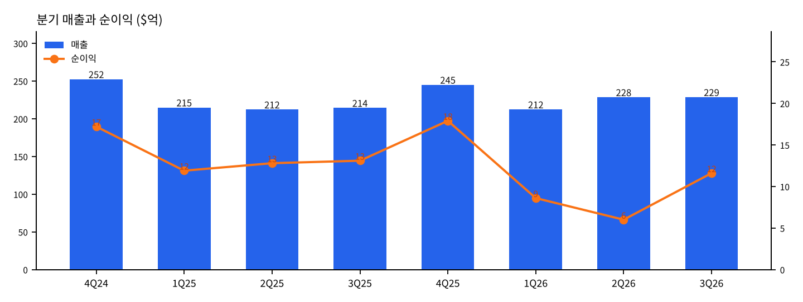
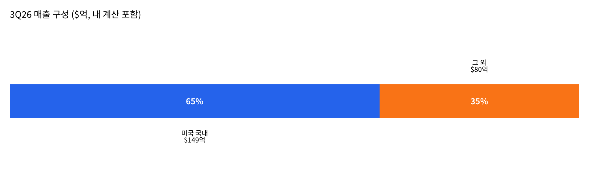
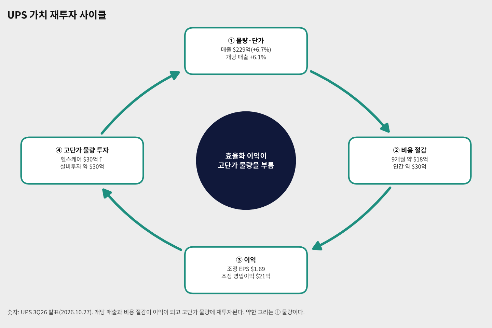

UPS는 택배망을 운영하고 소포당 요금을 받는다. 저수익 물량(Amazon)을 줄이고 단가 높은 중소기업·헬스케어 물량을 늘리는 중이다.
| 항목 | 내용 |
|---|---|
| 종목 | UPS (UPS) · NYSE · 물류·택배 · 조지아 애틀랜타 |
| 최근 분기(3Q26) | 매출 $229억, 조정 EPS $1.69 |
| 핵심 사업 | 미국 국내 택배, 국제 택배, 공급망 솔루션, 헬스케어 물류 |
| 직원 수 | 약 460,000명(트레이딩뷰) |
| 멀티플 | PER·PEG·P/S는 08~10 항목 표 참조 |
| 직책 | 인물 | 역할·특징 |
|---|---|---|
| CEO | 캐럴 톰(Carol Tomé) | Amazon 물량 축소와 네트워크 재편을 이끈다 |
| CFO | 브라이언 다이크스(Brian Dykes) | (회사 공개 자료 기준) |
경영 스타일: 양보다 질. 물량이 줄어도 개당 매출과 마진을 높이는 방향이다.
시설을 줄이고 자동화를 늘려 비용을 낮춘다. 9개월 약 $18억 절감.
헬스케어·중소기업 물량 비중을 높이는 전략이다. 헬스케어 매출 3분기 연속 $30억 초과.
다음 실적발표는 세 가지 질문에 답하는 자리다.
1. 물량 감소 속에서 이익이 늘어나나?
2. 4Q 성수기를 소화하나?
3. 연간 비용 절감 $30억을 달성하나?
한 줄 판정 규칙: 첫 질문(물량 감소 속 이익)이 확인되면 약한 고리인 ① 물량 유지에도 이익이 늘어난다고 본다.
일정: 4Q26 실적 발표는 2027.02.02 예정(트레이딩뷰).
| 분기 | 매출 | 순이익 | EPS | 조정 EPS | 특이 사항 |
|---|---|---|---|---|---|
| 4Q24 | $252.4억 | $17.2억 | 2.02 | 2.75 | |
| 1Q25 | $214.9억 | $11.9억 | 1.40 | 1.49 | |
| 2Q25 | $212.2억 | $12.8억 | 1.51 | 1.55 | |
| 3Q25 | $214.3억 | $13.1억 | 1.55 | 1.74 | |
| 4Q25 | $245.0억 | $17.9억 | 2.10 | 2.38 | |
| 1Q26 | $212.3억 | $8.6억 | 1.02 | 1.07 | |
| 2Q26 | $228.5억 | $6.0억 | 0.71 | 1.76 | |
| 3Q26 | $228.6억 | $11.6억 | 1.36 | 1.69 | Amazon 물량 축소 중, 연간 가이던스 상향 |
매출은 트레이딩뷰 스캐너의 분기 총매출이라 회사가 발표한 순매출과 다를 수 있다. 3Q26 GAAP EPS는 회사 발표값 $1.37이며 영업권 상각 $1.82억 등 순비용 $2.79억($0.32/주)이 포함돼 있다. 매출·순이익·EPS(GAAP 희석)는 트레이딩뷰 스캐너, 조정 EPS는 트레이딩뷰 실적 페이지의 Reported 값이다. 분기 정렬은 오래된 분기→최신이다.

흐름 요약: 최근 분기 매출은 $228.6억로 전년 동기 $214.3억 대비 +6.7%, 순이익은 $11.6억(전년 $13.1억)다. 최근 4분기 GAAP EPS는 $5.19, 조정 EPS는 $6.90다.
| 항목 | 내용 | 3Q26 금액 | 비고 |
|---|---|---|---|
| 미국 국내 | 국내 택배 | $148.65억 | +4.5% |
| 그 외(내 계산) | 국제·공급망 솔루션 등 | $80.4억 | 총 $229억에서 뺀 값 |

미국 국내 매출이 3분의 2 가까이를 차지해 Amazon 물량 변화가 곧 실적에 영향을 준다.
UPS는 전 세계에 소포를 정확히 배송하는 물류망을 운영하는 것을 목표로 한다.
| 축 | 내용 |
|---|---|
| 규모 | 분기 매출 $229억 |
| 효율 | 연 $30억 절감 예상 |
| 성장 | 헬스케어 분기 $30억 넘음 |

| 이동평균 | 값 | 종가 대비 | 위치 |
|---|---|---|---|
| 5일선 | $111.00 | -1.4% | 종가 아래 |
| 20일선 | $109.05 | +0.4% | 종가 위 |
| 50일선 | $101.41 | +7.9% | 종가 위 |
| 100일선 | $104.33 | +4.9% | 종가 위 |
| 200일선 | $104.76 | +4.5% | 종가 위 |
52주 고가 $122.41(2026-02-12)·저가 $90.84(2025-11-20) 범위에서 종가 $109.45는 20일선, 50일선, 100일선, 200일선을 웃돌고 5일선은 밑돈다.
| 규칙 | 기준 | 현재 값 | 신호 |
|---|---|---|---|
| 장기 추세 필터 | 종가 vs 200일선 | $109.45 > $104.76 | 매수 |
| 중장기 교차 | 50일선 vs 200일선 | $101.41 < $104.76 | 매도 |
| 단기 교차 | 20일선 vs 50일선 | $109.05 > $101.41 | 매수 |
| 돈키언 채널 | 55일 고가 $114.97 / 저가 $91.56 | 중간값 $103.27 위 | 매수 |
| 1개월 모멘텀 | 21거래일 수익률 | +9.9% (기준 $99.57) | 매수 |
| 3개월 모멘텀 | 63거래일 수익률 | +7.3% (기준 $102.01) | 매수 |
| 6개월 모멘텀 | 126거래일 수익률 | +11.4% (기준 $98.25) | 매수 |
| 12개월 모멘텀 | 252거래일 수익률 | +17.9% (기준 $92.83) | 매수 |
| 종합 (8개 평균) | +0.75 | 강한 매수 |
해석: 매수 신호 7개(장기 추세 필터, 단기 교차, 돈키언 채널, 1개월 모멘텀, 3개월 모멘텀, 6개월 모멘텀, 12개월 모멘텀), 매도 신호 1개(중장기 교차). CTA 점수 +0.75(강한 매수). 14일 ATR $2.76 (2.5%), 52주 고가 $122.41 · 저가 $90.84.
| 가격 | 기준 | 무엇이 바뀌나 |
|---|---|---|
| $114.97 | 55일 고가 | 돌파 시 채널 상단 갱신 |
| $104.76 | 200일선 | 종가가 이 선 위/아래인지로 장기 추세 신호가 바뀜 |
| $103.27 | 돈키언 중간값 | 55일 채널 중간값 위/아래로 신호가 바뀜 |
| $102.01 | 3개월 모멘텀 기준가 | 종가가 이 가격 위면 3개월 신호 매수 |
| $99.57 | 1개월 모멘텀 기준가 | 종가가 이 가격 위면 1개월 신호 매수 |
| $98.25 | 6개월 모멘텀 기준가 | 종가가 이 가격 위면 6개월 신호 매수 |
| $92.83 | 12개월 모멘텀 기준가 | 종가가 이 가격 위면 12개월 신호 매수 |
| $91.56 | 55일 저가 | 이탈 시 채널 하단 갱신 |
가격 수준은 신호가 바뀌는 기준선일 뿐 진입·청산 가격 제안이 아니다. 20일/50일 교차는 이동평균 자체가 움직여 단일 가격으로 표시하지 않았다. 일봉·주봉은 종가 기준 직접 계산(고저 데이터 미사용)이다.
| 악재 요인 | 내용 | 강도 |
|---|---|---|
| Amazon 물량 | 물량 축소 중, 물량 감소가 계속 | 중간 |
| 일회성 비용 | 3Q 순비용 $2.79억(영업권 $1.82억 포함) | 참고 |
| 성수기 | 4Q 일평균 물량 약 25% 증가 소화 필요 | 중간 |
| 티커 | 회사 | PER(TTM) | PEG | P/S | EPS 성장(YoY) |
|---|---|---|---|---|---|
| UPS | United Parcel Service | 15.9배 | – | 1.02배 | -8% |
| FDX | FedEx | – | – | – | – |
| UNP | Union Pacific | 23.5배 | 2.61 | 6.70배 | +9% |
| ODFL | Old Dominion | 31.5배 | 2.59 | 6.18배 | +12% |
| CSX | CSX | 26.6배 | 1.05 | 6.34배 | +25% |
비교 결론: UPS의 PER 15.9배는 Union Pacific·Old Dominion·CSX보다 낮다. PEG는 EPS 성장률이 음수라 산출 불가다.
현금·부채는 트레이딩뷰 스캐너 값이다. 설비투자와 배당 부담이 있다.
| 지표 | 값 | 출처 | 해석 |
|---|---|---|---|
| 현금·단기투자 | $68억 | 트레이딩뷰 스캐너(최근 분기) | |
| 총부채 | $303억 | 트레이딩뷰 스캐너(최근 분기) | |
| 순부채(부채−현금) | $235억 | 내 계산 | 현금 대비 부채 부담 |
| 잉여현금흐름(TTM) | $64억 | 트레이딩뷰 스캐너 | |
| TTM 매출 | $914억 | 트레이딩뷰 스캐너 |
| 기준 | 매출 | P/S | 비고 |
|---|---|---|---|
| 내 계산(종가 ÷ 최근 4분기 매출 합계) | $914.4억 | 1.02배 | 시총은 정렬용 데이터에서만 사용 |
| 동종(트레이딩뷰) | – | FDX – · UNP 6.70배 · ODFL 6.18배 · CSX 6.34배 | 11.19 |
해석: 부채가 현금보다 크다(아래 표). 영업현금흐름이 설비투자·배당을 감당하는지가 핵심이다(내 해석).
EBITDA는 영업활동의 현금 창출력을 보는 지표이고, PEG는 PER을 EPS 성장률로 나눈 값이다. EBITDA·FCF는 트레이딩뷰 TTM 값이다.
| 지표 | 값 | 산출 |
|---|---|---|
| EBITDA(TTM) | $121억 | 트레이딩뷰 스캐너 |
| EBITDA 마진 | 13.2% | EBITDA ÷ TTM 매출(내 계산) |
| FCF 마진 | 7.0% | FCF ÷ TTM 매출(내 계산) |
| PER(GAAP TTM) | 21.1배 | $109.45 ÷ $5.19 |
| PER(조정 TTM) | 15.9배 | $109.45 ÷ $6.90 |
| 방식 | PER | EPS 성장률 | PEG | 판정 |
|---|---|---|---|---|
| 조정 EPS (TTM $6.90) | 15.9배 | -8% ($7.53 → $6.90) | 산출 불가 | 참고 |
| GAAP EPS (TTM $5.19) | 21.1배 | -20% ($6.48 → $5.19) | 산출 불가 | 참고 |
판정: 조정 EPS 기준 PEG 산출 불가(EPS 성장 -8% 또는 음수) PEG 기준은 1.0 이하 투자 적격, 0.5 이하 적극 매수다. EPS 성장률은 최근 4분기 EPS 합계를 직전 4분기 합계와 비교한 값(내 계산)이고, 일회성 항목이 있으면 조정 EPS 행을 함께 본다.

UPS의 사이클: 효율화로 번 이익이 헬스케어·중소기업 같은 고단가 물량에 재투자돼 개당 매출을 키우고, 다시 이익이 되는 순환이다.
| 고리 | 현재 숫자·근거 |
|---|---|
| ① 물량·단가 | 3Q26 매출 $229억(+6.7%) · 미국 국내 개당 매출 +6.1% |
| ② 비용 절감 | 네트워크 재편·효율화 9개월 약 $18억, 연간 약 $30억 예상 |
| ③ 이익 | 조정 영업이익 $21억 · 조정 EPS $1.69 |
| ④ 고단가 물량 투자 | 헬스케어 매출 3분기 연속 $30억 초과 · 연간 설비투자 약 $30억 |
사이클의 특징: 약한 고리는 ① 물량이다(Amazon 물량 축소로 물량이 줄고 있다). "(내 해석)"은 보고서 수치가 아닌 해석이다.